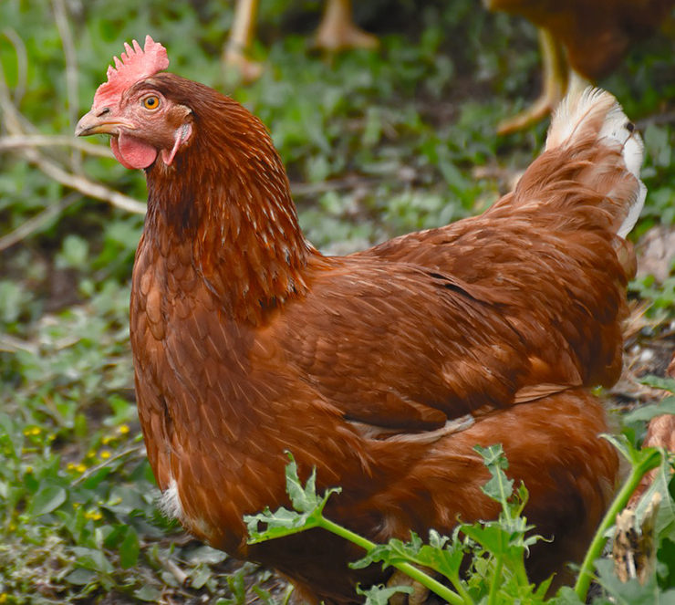

El gallo y la gallina (Gallus gallus domesticus) son la subespecie doméstica de la especie Gallus gallus, una especie de ave galliforme de la familia Phasianidae procedente del sudeste asiático. Los nombres comunes son: gallo, para el macho; gallina, para la hembra, y pollo, para los subadultos. Es el ave más numerosa del planeta, pues se calcula que el número de ejemplares supera los dieciséis mil millones.1 Los gallos y gallinas se crían principalmente por su carne y por sus huevos. También se aprovechan sus plumas y algunas variedades se crían y entrenan para su uso en peleas de gallos y como aves ornamentales. Es un ave omnívora. Su esperanza de vida se encuentra entre los cinco y los diez años, según la raza.
| Nombre | Nombre común | Causado por |
|---|---|---|
| Gripe aviar | Gripe del pollo | Influenzavirus A de la familia Orthomixoviridae |
| Botulismo | Toxina botulínica de Clostridium botulinum | |
| Coccidiosis | Coccidiasina | |
| Resfriado común | Catarro | Rhinovirus, coronavirus |
| Distocia (retención del huevo) | Huevo muy grande [cita requerida] | |
| Erisipela | Erysipelothrix rhusiopathiae | |
| Virus de la leucosis aviar | Alpharetrovirus | |
| Enfermedad de Marek | Herpes virus | |
| Candidiasis | Candida albicans | |
| Mycoplasma | Mycoplasma | |
| Enfermedad de Newcastle | Paramixovirus | |
| Psitacosis | Ornitosis, enfermedad de los loros | Clamidophyla psitacci |
| Salmonella | Salmonelosis | Salmonella |
| Pierna escamosa | Parásitos | |
| Toxoplasmosis | Toxoplasma gondii |